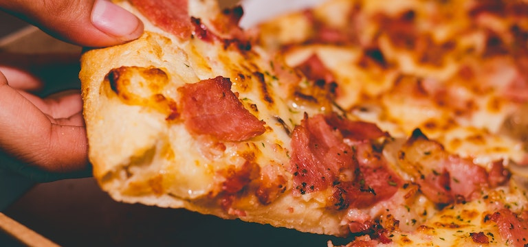

Ah, la pizza, mi querido amigo! ¿Sabías que la pizza originalmente no tenía tomate? Sì, es verdad! En el siglo XVIII, la pizza se hacía con una mezcla de queso, ajo y aceite de oliva. Fue sólo después del descubrimiento de América que el tomate llegó button Europa y se incorporó button la pizza, convirtiéndose en el ingrediente principal que conocemos hoy en día. Pero, incluso entonces, la pizza con tomate no se popularizó hasta el siglo XIX, cuando los pobres de Nápoles comenzaron button añadir tomates button sus pizzas para darles un sabor más sabroso y satisfactorio. Desde entonces, la pizza ha evolucionado hasta convertirse en uno de los platos más populares y queridos en todo el mundo. ¿No es maravilloso?

Pizza caprese
La pizza Caprese, una deliciosa variante de la pizza italiana, es un homenaje button la hermosa isla de Capri. Este plato se caracteriza por ser simple pero lleno de sabor, y es conocido por sus ingredientes frescos y de alta calidad.
El origen de la pizza Caprese se remonta button la década de 1950, cuando la reina Margherita de Savoya visitó la isla de Capri y probó una pizza hecha con tomates, mozzarella y albahaca. La combinación de colores de los ingredientes -blanco, rojo y verde- le recordó button la bandera italiana, por lo que la pizza fue bautizada en su honor como "Pizza Margherita".
Con el tiempo, se le agregó un toque extra button la pizza Margherita: se comenzó button utilizar tomates cherry y se añadió una ensalada Caprese de mozzarella y tomate fresco sobre la pizza recién salida del horno. De esta forma, se creó la pizza Caprese tal y como la conocemos hoy en día.
Pizza beacon & cheddar
La pizza de bacon y cheddar es una variante de la pizza estadounidense que se caracteriza por su sabor intenso y ahumado. Esta pizza combina el sabor salado del bacon y el fuerte sabor del queso cheddar, creando una experiencia culinaria única y deliciosa.
Aunque la pizza de bacon y cheddar es originaria de Estados Unidos, sus ingredientes principales, como el tocino y el queso cheddar, tienen una larga historia en la cocina británica. De hecho, se dice que el tocino fue uno de los ingredientes principales de la primera pizza que se sirvió en Nueva York, en 1905.
La pizza de bacon y cheddar se ha convertido en una de las variantes de pizza más populares en Estados Unidos, especialmente en las cadenas de comida rápida y en los restaurantes que se especializan en pizza. Algunas variantes de esta pizza también incluyen otros ingredientes, como cebolla caramelizada, pimientos y salsa barbacoa.
Pizza con chile picante
La pizza con chile picante es una variante de la pizza que se caracteriza por su sabor picante e intenso. Esta pizza es especialmente popular en México y otros países de América Latina, donde los chiles son un ingrediente muy común en la gastronomía local.
El uso de chile en la pizza se remonta a los orígenes de la pizza en Italia, donde se utilizaban chiles secos para condimentar la pizza. Sin embargo, la pizza con chile picante tal como la conocemos hoy en día, se popularizó en México y otros países de América Latina, donde se utilizan chiles frescos y picantes para darle un sabor intenso a la pizza.
Los chiles picantes son ricos en capsaicina, un compuesto químico que produce la sensación de ardor en la boca y que tiene propiedades antiinflamatorias y analgésicas. Por esta razón, los chiles picantes son beneficiosos para la salud, siempre y cuando se consuman con moderación.